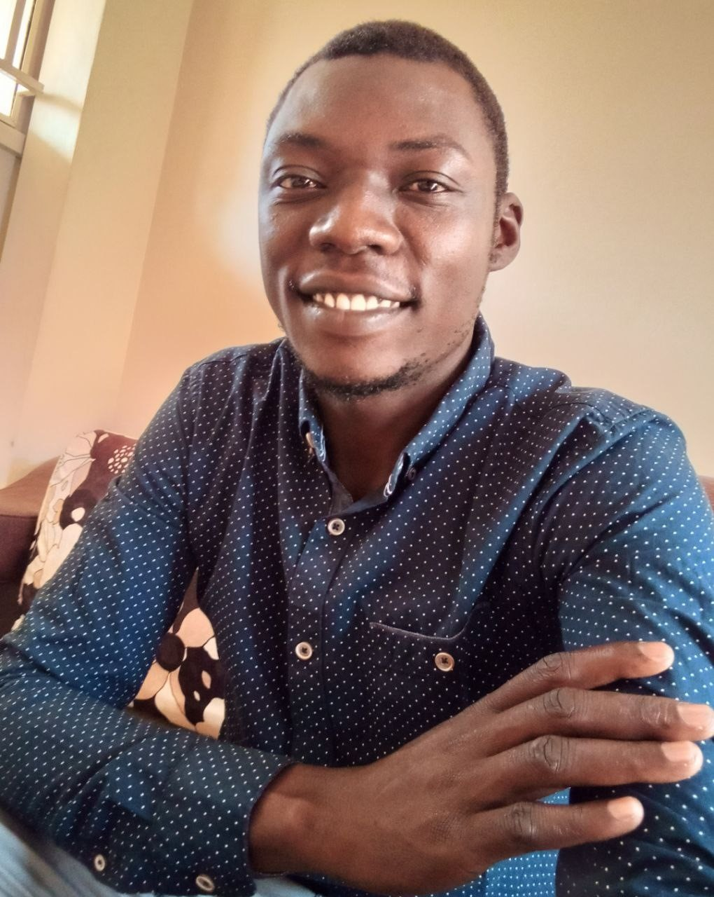
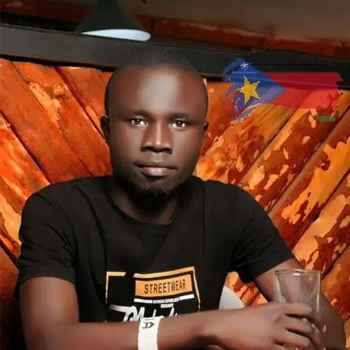
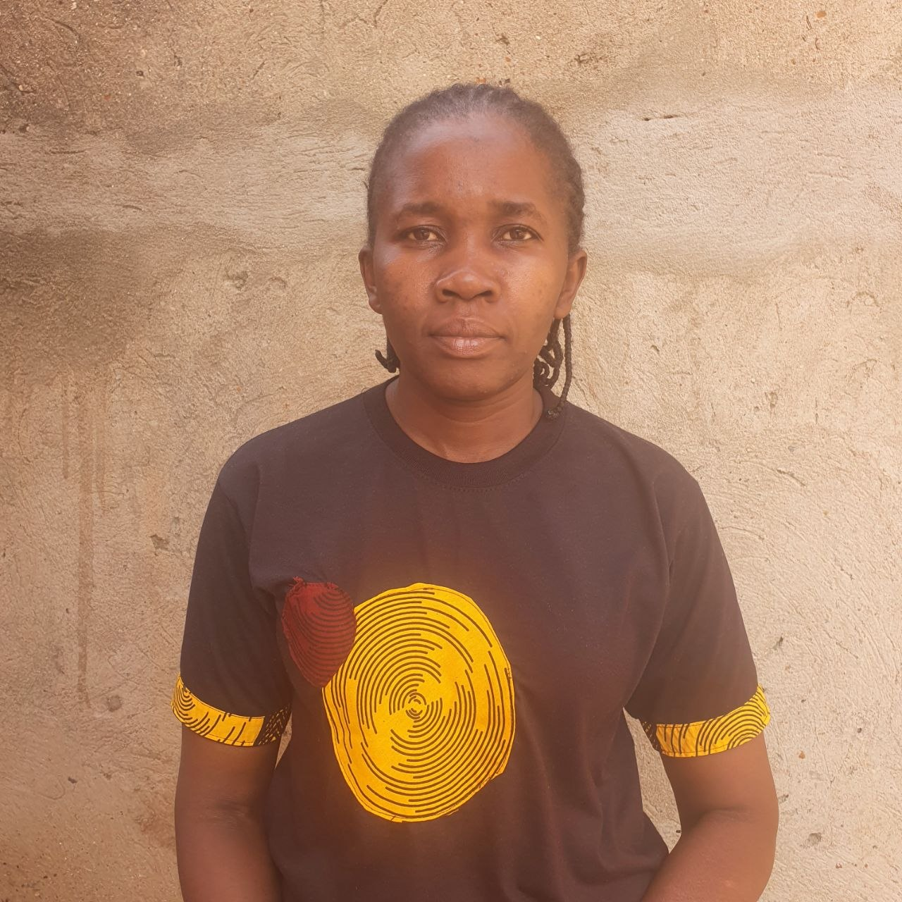
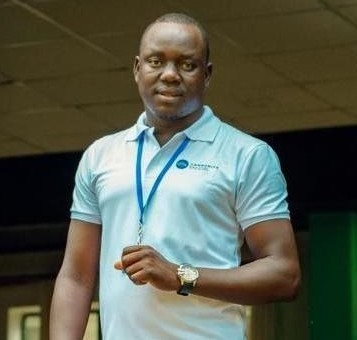
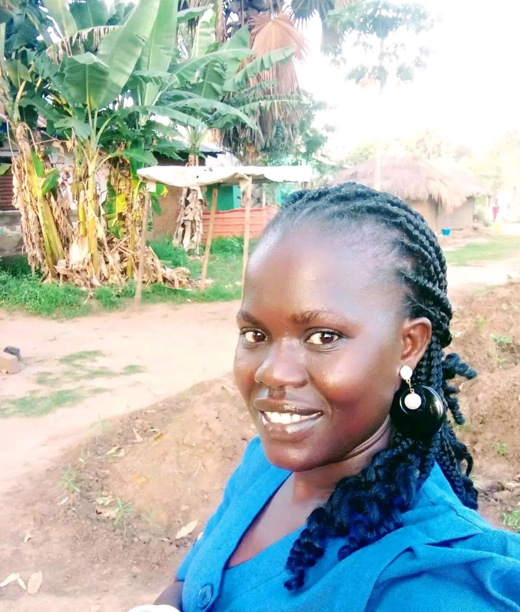
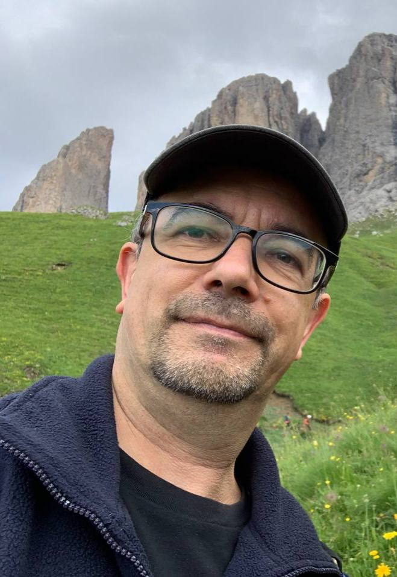
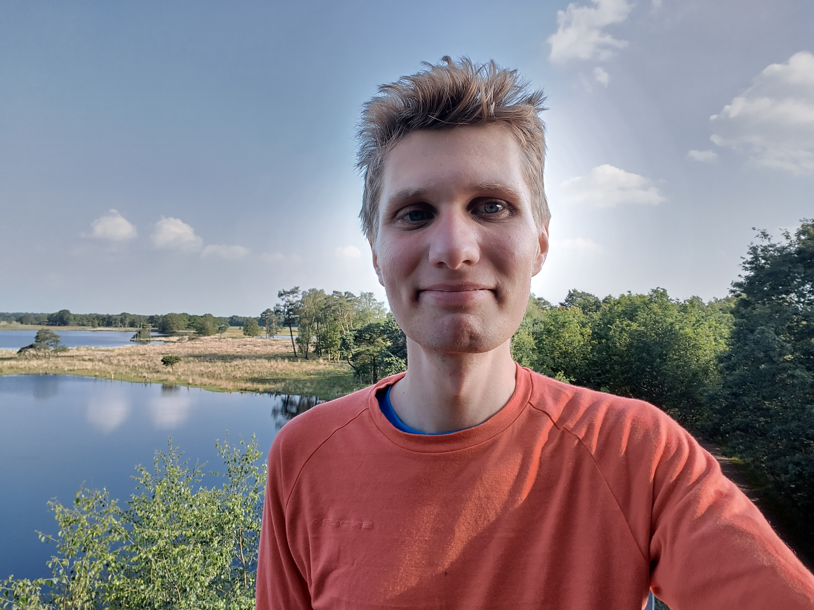

Mathew was born and grew up in South Sudan and studied Diploma in Information Technology (IT) at the International University of East Africa (Kampala) Uganda. He is a self-driven and trained repairer, maker, mentor and advocate for repair, Open Technology, gender inclusion and diversity.
He loves repairing stuff and at the age of 12, was inspired by his dad who is a medical personnel but also loves repairing things. he watched him repair his radios and was impressed but unfortunately his dad could not repair most of them due to lack of knowledge and skills which challenged Mathew to learn and teach people how to repair their items.
Additionally in early 2013 he was upset when he got locked out of his phone and could not access apps and did not know how to fix the problem. So he took his phone to a technician, but was not allowed to watch while the technician repaired it. He went out, but stood in a place where he could see how the technician was fixing the problem. After he paid him, set out to learn how to do it himself. He succeeded in locking and unlocking it. Later, his laptop broke down and couldn't power on, so he took it to a technician who tried fixing it but failed. But instead of giving him back his laptop in good shape, he(the technician) had removed some of the parts like the hard drive disk, RAM, and the network card. Only after taking it to an Indian technician did Mathew learn that these parts had been removed. Understandably, this angered him and it also made him want to learn and be able to teach people how to repair things and make repair open, which includes teaching them to be ethical while providing repair services.
In 2016, he fled his country with a zip lock of repair tools (a screwdriver, a cutter and a toothbrush) and started repairing but never knew repair protects the environment by reducing carbon emissions and landfill until 2021 when he joined the Restarters community, a global forum for repairers.
The idea of bridging the gap in repair of everyday items and making repair open led to the founding of the CC4D with his two colleagues Maliamungu Richard and Dawa Edina. His roles at the CC4D include helping develop the repair café and women inclusion in tech/repair culture programs.
In his free time, he enjoys explorative travel, research, and visits his fruit trees farm.
Maliamungu Richard is an open technologies community trainer, IT resource development engineer, and community empowerment advocate with extensive experience supporting refugee and underserved communities in Uganda and South Sudan. Born in Yei, South Sudan, and later residing in Rhino Camp Refugee Settlement in Uganda, he has dedicated his work to using technology, innovation, and practical skills training as tools for sustainable development, education, and peacebuilding.
With a background in Information Technology from Bugema University, he combines technical expertise with community-centered leadership. His work focuses on digital inclusion, open-source technologies, repair skills, e-waste management, and access to information in remote and off-grid environments. Over the years, he has facilitated workshops and mentorship programs in device repair, IT skills, innovation, and sustainable development for youth and local communities across Northern Uganda and South Sudan.
He has contributed to several international and regional initiatives, including the #ASKnet and #ASKotec programs supported by German cooperation organizations, where he serves as an Open Technologies Community Trainer and Engineering Consultant. Through these initiatives, he has helped promote hands-on learning, knowledge sharing, and local problem-solving using open technology tools designed for emergency and low-resource settings.
As a co-founder and Deputy Executive Director of Community Creativity for Development, he has also played a leading role in empowering young people through ICT training, innovation hubs, and environmental awareness programs such as e-waste management and repair culture. His experience extends into WASH programs, community development, and youth mentorship, reflecting a strong commitment to social impact and resilience-building within displaced and marginalized communities.
His professional journey is supported by specialized training in project management, innovation design, sustainable development goals, community mentorship, and open documentation methodologies. Skilled in various digital and creative tools, he continues to advocate for open-source learning, community empowerment, peacebuilding, and technology-driven social transformation across Africa.
Dawa Edina Hillary is an emerging software engineer and technology professional with a strong passion for building digital solutions that create meaningful impact in communities. Currently serving as a Software Engineering Apprentice at Refactory Academy, she is advancing her expertise in modern software development, problem-solving, and collaborative product engineering while gaining hands-on industry experience in designing scalable and user-focused applications.
With an academic background in Software Engineering from Bugema University, Dawa has developed skills in full-stack development, IT administration, relational databases, and system support. Her technical foundation includes experience with HTML (React JS), CSS, JavaScript, node.js, express.js, Java, Python, combined with a strong understanding of software design and maintenance. She is passionate about leveraging technology to improve efficiency, accessibility, and user experience across digital platforms.
Beyond her technical work, Dawa has demonstrated leadership and community impact through her role as an IT and Gender Advocate at Community Creativity for Development (CC4D), where she contributed to website development, technical support, and community outreach initiatives. Her work involved supporting vulnerable communities, coordinating digital communication, maintaining accurate data systems, and collaborating with multidisciplinary teams to deliver effective services.
Driven by continuous learning and innovation, Dawa is committed to growing as a software engineer while contributing to projects that combine technology, creativity, and social impact. She values teamwork, adaptability, and problem-solving, and aspires to build solutions that empower organizations and communities across Africa and beyond.
Mawa Robert is a dedicated community leader and social worker serving as a Space Manager at CC4D Uganda. He is passionate about empowering communities through technology, mentorship, and social development initiatives that create opportunities for young people and vulnerable groups.
In his role at CC4D Uganda, Mawa supervises volunteers and coordinates different activities within the innovation and learning space. He conducts various ICT trainings that equip learners with practical digital skills, helping them improve their education, communication, creativity, and employment opportunities. Through patience and strong leadership, he supports individuals in gaining confidence and adapting to the growing digital world.
Alongside his work in technology and community empowerment, Mawa is also a respected church leader who actively supports and guides people within his faith community. His leadership is built on values of integrity, compassion, teamwork, and service to others. He uses his experience in social work and community development to encourage positive change, especially among youth and underserved communities.
With experience in community development, volunteer coordination, and digital education, Mawa Robert continues to make a meaningful contribution to society. His commitment to helping people grow both socially and professionally reflects his belief that knowledge, mentorship, and unity can transform communities and inspire a better future.
Alongside his work in technology and community empowerment, Mawa is also a respected church leader who actively supports and guides people within his faith community. His leadership is built on values of integrity, compassion, teamwork, and service to others. He uses his experience in social work and community development to encourage positive change, especially among youth and underserved communities.
With experience in community development, volunteer coordination, and digital education, Mawa Robert continues to make a meaningful contribution to society. His commitment to helping people grow both socially and professionally reflects his belief that knowledge, mentorship, and unity can transform communities and inspire a better future.
Esther is the Hub Manager at the Community Creativity for Development (CC4D) innovation hub in Yei, where she leads and coordinates a variety of technology and community-based programs aimed at empowering young people and promoting digital inclusion. She holds a Diploma in Information Technology, a qualification that has strengthened her technical knowledge and enhanced her ability to train, mentor, and guide others in the field of technology.
With a strong passion for learning and community development, Esther conducts different technology-related trainings, including computer literacy, digital communication, online tools, and other practical digital skills that help young people adapt to the modern world. Her ability to simplify technical concepts and create an engaging learning environment has made her an important mentor to many learners within the community.
As Hub Manager, she oversees the daily operations of the innovation hub, ensuring that the space remains active, organized, and welcoming for all participants. She also supports youth-led initiatives, community workshops, and collaborative activities that encourage creativity, leadership, and innovation.
Esther’s work extends beyond technology training. She is committed to creating opportunities for young people, especially women and girls, to gain confidence, develop skills, and participate in community transformation. Her dedication, professionalism, and willingness to support others continue to make a meaningful impact in Yei and surrounding communities.
Through her leadership and educational background in Information Technology, Esther continues to use technology as a tool for empowerment, education, and positive social change.
Born in 1970, he grew up with an older brother and a younger sister. His sister was born with a serious illness and sadly passed away in 2020 after spending many years bedridden. These personal experiences helped shape a deep sense of empathy and commitment to helping others.
His father was a truck driver known for his creativity, technical ability, and strong work ethic. Beyond maintaining his truck to the highest standards, he was skilled in repairing hydraulic systems, heating boilers and radiators, electrical installations, and even construction work at home. He was highly versatile and resourceful, though later in life myasthenia gradually limited his ability to continue the work he loved.
With a background in electronics and informatics, he currently works as an informatics professional in an international electronics microchip company. Several years ago, he became involved with the Restart Project and has since been active as a Restarter in Milan and a Right to Repair advocate. He attended the first FixFest in London, the second in Berlin, and the third in Brussels, where he met Mathew and developed a strong appreciation for his projects and approach.
His passion for technology extends beyond professional work into social impact and volunteering. He supported humanitarian initiatives with the Salesians in Ethiopia and contributed to reducing the digital divide through projects with the STFoundation in the Dominican Republic, Bolivia, and Brazil. As a maker and supporter of Linux and free software, he strongly believes technology and knowledge should be shared to create a better and more inclusive world.
Currently, he is involved in projects supporting people with hearing loss as well as initiatives for blind individuals. Inspired by Mathew’s work, he hopes to contribute to similar initiatives in Italy. He is also a family man, married with three children — two boys and a girl — who are themselves involved in meaningful projects focused on helping and supporting others.
Based in the United Kingdom, Artur Donaldson works as a data engineer in environmental sustainability in The Netherlands and serves as an advisor to Community Creativity for Development (CC4D). Collaboration with CC4D began in 2020 through a virtual repair diary project, leading to continued involvement in grant proposal development, media content creation, and awareness campaigns supporting refugee communities.
CC4D’s work in promoting access to repair, technical skills, and education within refugee contexts demonstrates the importance of equitable access to technology and knowledge regardless of origin or gender. Continued international and local support for CC4D contributes toward strengthening refugee rights in Uganda and beyond, particularly in relation to repair facilities, digital inclusion, and skills development.
Providing refugees, displaced persons, and low-income communities with access to repair knowledge and technical training helps strengthen social resilience and supports the economic development of host communities. Repair-focused initiatives and technical professions also encourage community integration, create opportunities for self-reliance, and equip individuals with transferable skills that can play a significant role in rebuilding communities and regions affected by displacement.